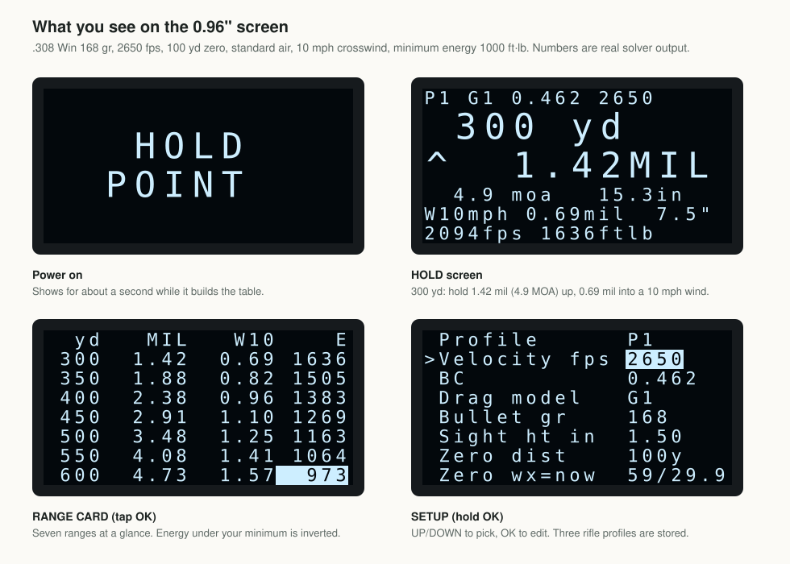
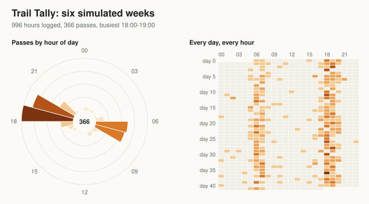
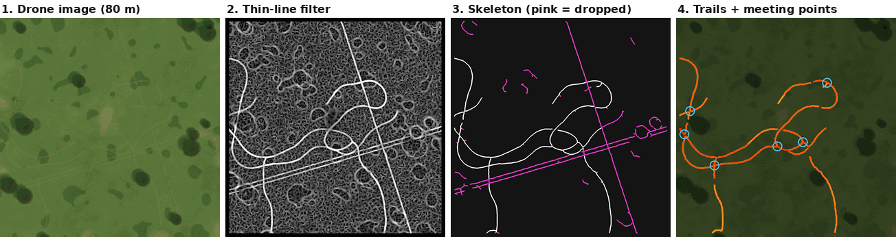
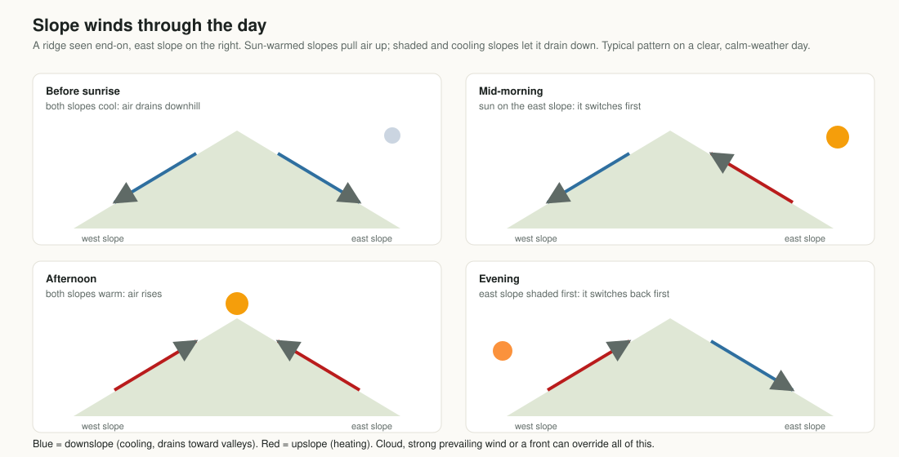
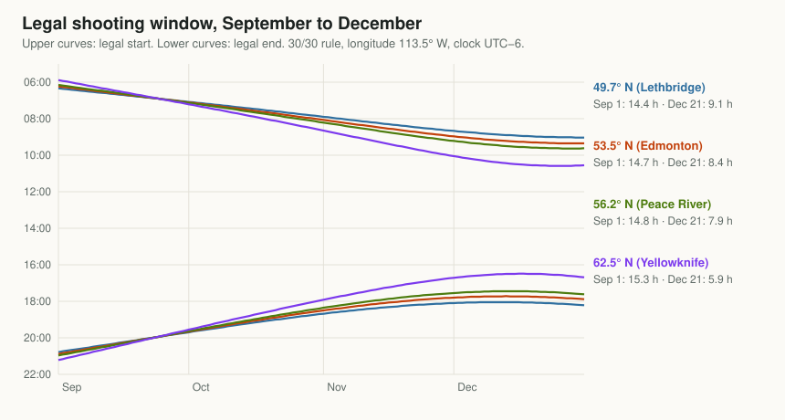

Project 01 · Ballistics · Built, not yet on hardwareWhere do I hold? The physics inside a $5 ballistics calculator
Drag and the ballistic coefficient, G1 vs G7, air density, point-blank range, wind drift, moving animals and steep shots, and how an 8-bit chip solves them in a second.
Read the article →

Project 02 · Patterns · Firmware tested, not yet builtHow a $3 counter learns when deer use a trail
A motion counter that sleeps for weeks and records which hours a trail gets used, and with a second $1 sensor, which way each animal went. Plus the timekeeping and storage tricks that make it work on two AA cells.
Read the article →

Project 03 · Mapping · Software, synthetic testsFinding game trails from the air, without AI
Classic image processing that pulls thin, winding trails out of off-season drone images, then suggests stand sites whose scent stays off the trails for each wind of the day.
Read the article →

Project 04 · Wind and scent · Firmware tested, not yet builtWhen does the wind switch at your stand?
Why hills make their own wind, what moves the morning and evening switch, what it does to your scent, and a $5 logger that measures it where you sit.
Read the article →

Project 05 · Regulations · Web toolLegal shooting hours, for your exact stand
Legal light for your exact stand with your rule's offsets, plus when direct sun actually reaches the stand over the real skyline. Printable season table.
Open the tool →
Frequently asked questions
Can an Arduino really run a ballistics calculator?
Yes. An ATmega328P can step a point-mass trajectory with G1/G7 drag tables. HoldPoint builds a full 25–1000 yard table in about 1.1 seconds at 16 MHz, then scrolling is instant.
How is this different from a ballistic rangefinder or a phone app?
Ballistic rangefinders and weather meters with built-in solvers cost hundreds of dollars, and phone apps mean a phone in the cold with gloves on. HoldPoint is a single-purpose device that costs about $5 in parts and can be checked against an independent solver.
Which bullets and drag models does it support?
Any bullet with a published G1 or G7 ballistic coefficient. Use G7 when the maker publishes it, which most long boat-tail bullets do.
Is it legal to use when hunting?
Rules on electronic aids vary by state and province. Check your local hunting regulations. Drone scouting in particular is restricted in many places, which is why Trail Finder is designed for off-season mapping.